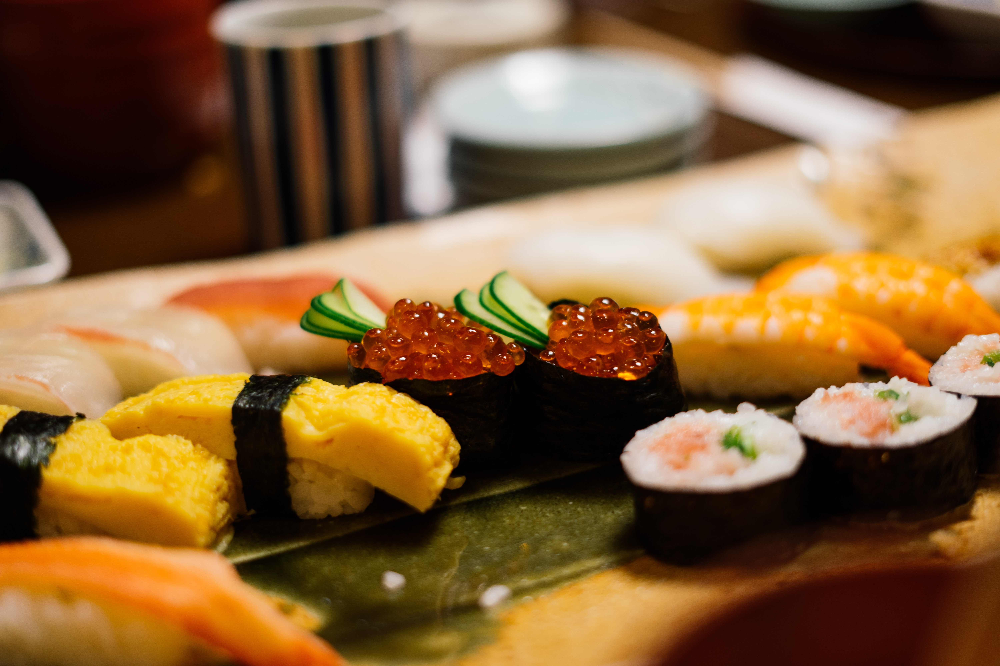
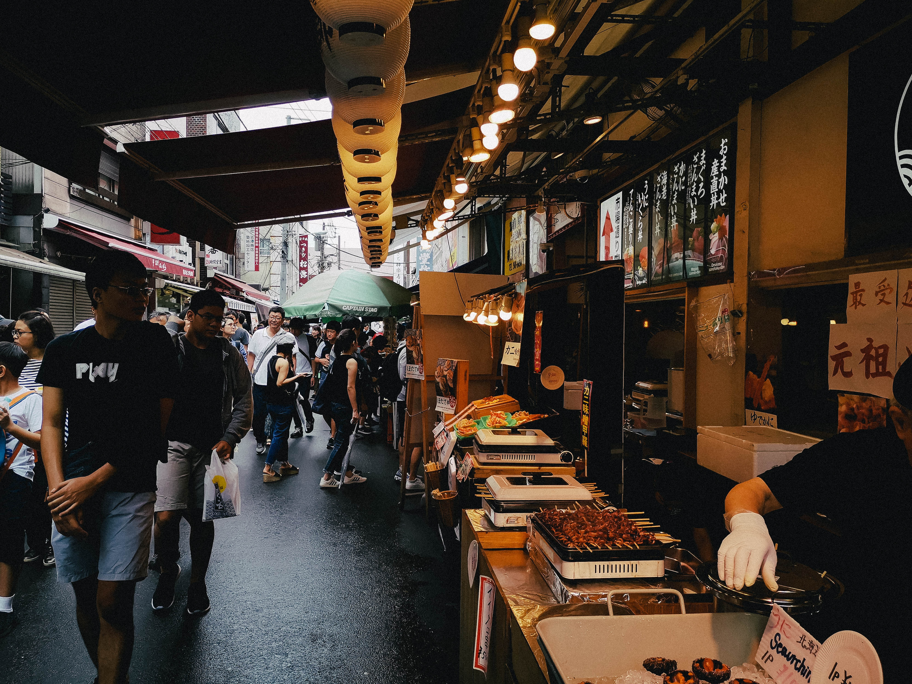
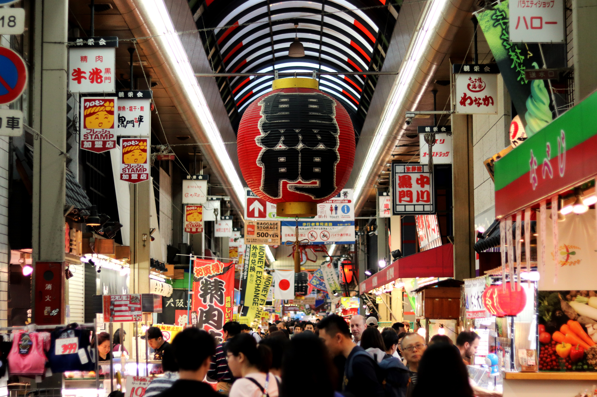

A Guide to Sushi
Originating in the Mekong Delta, sushi has evolved to take on many forms. Some well known styles are nigrizushi and sashimi.

A Guide to Ramen
In Japan, ramen is considered casual food. Most restaurants have short menus that feature their speciality ramen.

A Guide to Okonomiyaki
A popular dinner dish, okonomiyaki is a filling savory pancake that is easily customizable.

Tsukiji Market
Famous for its waterfront views and fish market, Tsukiji Market features lots to explore with remnants of Western influence.

Kuromon Market
Located in Osaka, the old-style marketplace boasts 170 shops and all sorts of fish, meat and produce.

Nishiki Market
As one of the older markets in Kyoto, Nishiki Market gives its visitors a taste into to the lives of locals and their food culture.